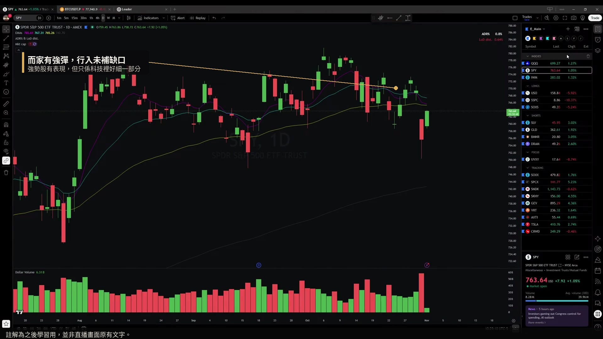
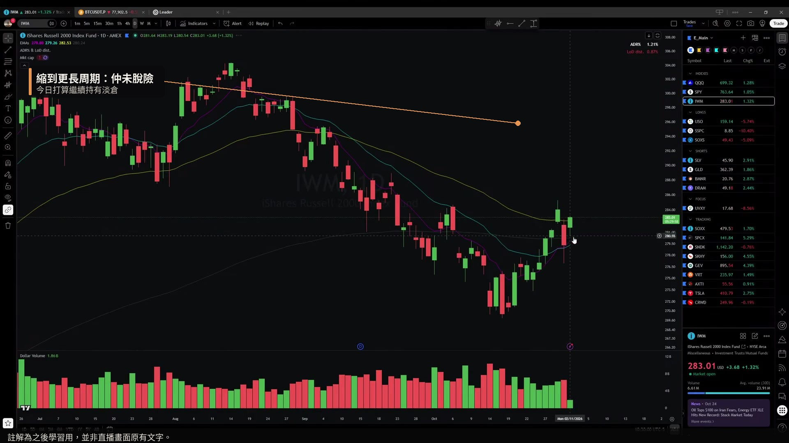

概要
有反彈，唔等於已經轉勢
2:17:20 佢話而家見到較強嘅反彈，行入未補缺口；部分強勢股表現不錯，但只係科技裡面好細一部分，好多強勢股其實在防守板塊。縮到週線，佢不覺得已經脫險，今日打算繼續持有淡倉。
圖一 · 主圖
強彈行入未補缺口
直播 2:17:30

原話
So far, we're getting some strong bounce into the unfilled gap, and the strong names are really doing pretty well, some of the names, but it's definitely only a really really small part of the tech names. I think a lot of the strong stocks are in the defensive sectors.
到目前為止，我哋見到較強嘅反彈，行入未補缺口；部分強勢股表現的確不錯，但肯定只係科技名稱裡面好細一部分。我覺得好多強勢股係在防守板塊。
點樣讀
反彈入缺口係事實描述。強勢股範圍窄、好多在防守板塊，係佢仍然未當轉勢嘅理由之一。
圖二
縮到更長周期：仲未脫險
直播 2:18:20

原話
And zooming out on the, into the weekly. I don't think we are out of the woods yet. And I think I'm going to hold my shorts today.
縮出去、去到週線。我唔覺得我哋已經脫險。而且我諗今日會繼續持有淡倉。
點樣讀
「未脫險」同「今日繼續持有淡倉」係當時態度，唔係新規則。2:18:14 曾經過 QQQ，本頁用 IWM／大市框架來承呢句。
附註
注意事項
- 2:17:40 前後曾快速翻過 TEAM、軟件 ETF 等，唔單獨成科。
- 畫面睇唔到成交價或者倉位。